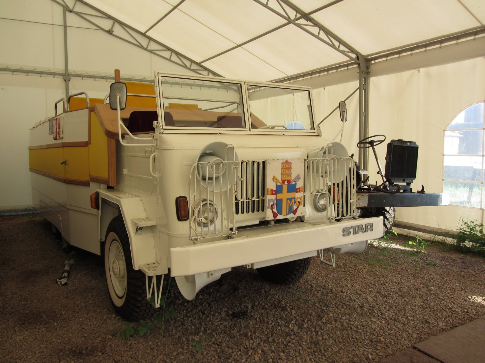

Muzeum Przyrody i Techniki "Ekomuzeum" im. Jana Pazdura w Starachowicach
Muzeum, położone w Starachowicach. Placówka mieści się na terenie dawnej huty i jest jednostką organizacyjną powiatu starachowickiego.